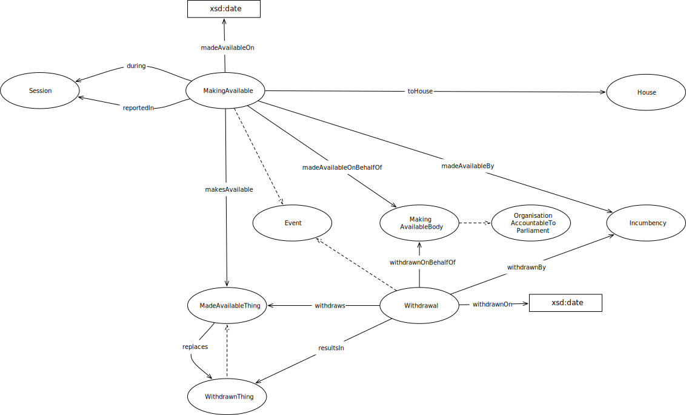

IRI: http://parliament.uk/ontologies/making-available/House
IRI: http://parliament.uk/ontologies/making-available/Incumbency
IRI: http://parliament.uk/ontologies/making-available/MadeAvailableThing
IRI: http://parliament.uk/ontologies/making-available/MakingAvailable
IRI: http://parliament.uk/ontologies/making-available/OrganisationAccountableToParliament
IRI: http://parliament.uk/ontologies/making-available/PaperExpression
IRI: http://parliament.uk/ontologies/making-available/Session
IRI: http://parliament.uk/ontologies/making-available/Withdrawal
IRI: http://parliament.uk/ontologies/making-available/WithdrawnThing
IRI: http://parliament.uk/ontologies/making-available/duringSession
IRI: http://parliament.uk/ontologies/making-available/intoSession
IRI: http://parliament.uk/ontologies/making-available/madeAvailableBy
IRI: http://parliament.uk/ontologies/making-available/makesAvailable
IRI: http://parliament.uk/ontologies/making-available/providedBy
IRI: http://parliament.uk/ontologies/making-available/resultsIn
IRI: http://parliament.uk/ontologies/making-available/toHouse
IRI: http://parliament.uk/ontologies/making-available/withdrawnByIncumbency
IRI: http://parliament.uk/ontologies/making-available/withdrawnByOrganisation
IRI: http://parliament.uk/ontologies/making-available/withdraws
IRI: http://parliament.uk/ontologies/making-available/madeAvailableOn
IRI: http://parliament.uk/ontologies/making-available/withdrawnOn
This HTML document was obtained by processing the OWL ontology source code through LODE, Live OWL Documentation Environment, developed by Silvio Peroni.